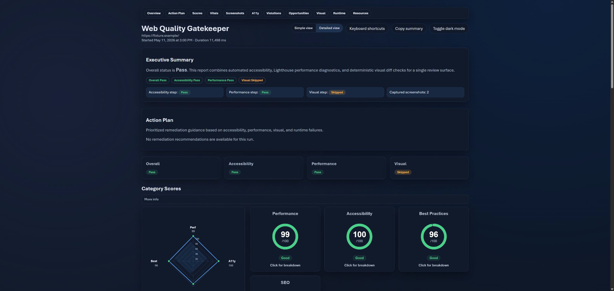

Web Quality Gatekeeper
A GitHub Action and npm CLI for browser smoke checks, accessibility scans, Lighthouse budgets, and visual comparisons. Each run produces an HTML report plus stable JSON and Markdown artifacts for CI.
Contract-checked JSON formats are covered by versioned schemas and contract tests.
| GitHub Action | Available at @v3 |
|---|---|
| Local CLI | Install from npm with Node.js 22.19 or later |
What it checks
- Playwright navigation and runtime errors
- axe-core accessibility violations
- Lighthouse performance budgets
- Pixel-level visual differences
- Screenshot capture
- Multi-page rollups and trend history

GitHub Actions
Add the stable major tag to a workflow. The policy input is optional; this example uses the Action defaults.
- uses: actions/checkout@df4cb1c069e1874edd31b4311f1884172cec0e10 # v6.0.3
with:
persist-credentials: false
- id: wqg
uses: Jahrome907/web-quality-gatekeeper@v3
with:
url: https://your-site.example
- name: Upload audit artifacts
if: always() && steps.wqg.outputs.sensitive-audit != 'true'
uses: actions/upload-artifact@043fb46d1a93c77aae656e7c1c64a875d1fc6a0a # v7.0.1
with:
name: wqg-artifacts
path: |
${{ steps.wqg.outputs.report-path }}
${{ steps.wqg.outputs.summary-v2-path }}See the complete consumer workflow for every input and output.
Install the CLI
The npm package is available for Node.js 22.19 or later.
npm install --save-dev web-quality-gatekeeper@3.2.5
npx playwright install chromium
npx wqg audit https://your-site.exampleReproduce the proof
Read the project-site case study for measured audits of two real site revisions and a controlled regression that fails the accessibility gate.
Follow the fixture run guide or review the public comparison protocol.